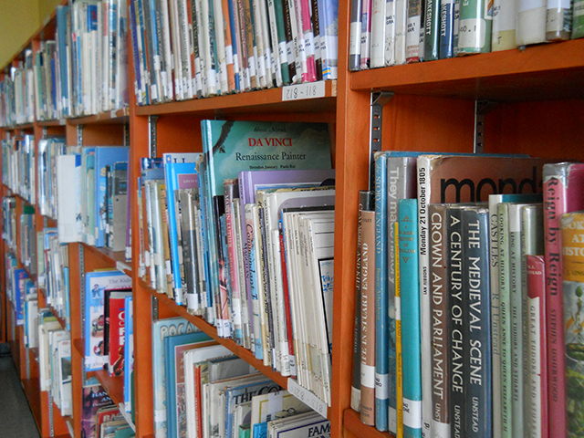

Campus Life
school yard
Was established in 1925
The school yard is where all the kids play during reccess and lunch reccess and also during health but we don't do health in the school yard during the winter we do it inside the school.
school library
Was built in 1925
The school library at hampstead is closed at moment because of covid but luckly we still have a library session were we learn how to use the online library on the official Hampstead school web.
school auditorium
Was built in 1925
The Hampstead school auditorium is were we have our morning asembly, school announsements, workouts and it is also used as a gymnasium were students during gym time play games that invole exercise.
Achievements
Hampstead Elementary School has been recognized as a National Blue Ribbon School for 2020. The recognition is based on a school’s overall academic performance or progress in closing achievement gaps among student subgroups. The National Blue Ribbon Schools award affirms the hard work of educators, families, and communities in creating safe and welcoming schools where students master challenging and engaging content. Now in its 38th year, the National Blue Ribbon Schools Program has bestowed almost 10,000 awards to more than 9,000 schools, with some schools winning multiple awards. Schools are eligible for nomination after five years. The U.S. Education Department recognizes all schools in one of two performance categories, based on all student scores, student subgroup scores and graduation rates: Exemplary High Performing Schools – These are among their state’s highest performing schools as measured by state assessments or nationally normed tests. Exemplary Achievement Gap Closing Schools – These are among their state’s highest performing in closing achievement gaps between a school’s student groups and all students. Hampstead was honored as an Exemplary High Performing School. The school places in at least the top 15 percent of all schools in Maryland based on state assessment scores in math and English language arts (ELA). Hampstead Elementary School houses grades K-5, with 400 students and 103 staff members. The school includes three regional programs for special education – the Preschool Regional Early Childhood Program (PREP), Autism, and Learning for Independence (LFI). The school improvement plan is focused on the development of teachers and instructional support staff by providing professional development structured around improving writing in all content areas and ensuring that all students meet grade-level expectations by third grade. For the past six years, Hampstead has shown continuous progress in its academic performance on the Partnership for Assessment of Readiness for College and Careers (PARCC) assessment. As a result, it remains as one of the top performing schools in Carroll County. This progress is a direct reflection of the school’s teachers, students, and parents' dedication to learning and providing a culture that is accepting of all students. The school focuses on providing first pass instruction that is meaningful, engaging and using assessments. Special education teachers and classroom teachers collaborate, co-teach, differentiate instruction, and use data to inform instruction and interventions. Hampstead believes that all students can learn. With the school closures due to COVID-19, teachers are becoming fluent with synchronous instruction using Google Classrooms. Teachers are developing engaging lessons through this platform that include interactive slides, videos, interactive websites, and meeting with small groups for differentiation. Our school is unique because of specialized programming that offers an environment where all students are welcomed and valued. “We are extremely proud of Hampstead Elementary School,” said Superintendent Steven Lockard. “Being named a National Blue Ribbon School affirms the combined work of the students, staff, families, and the community in creating an outstanding, welcoming school where students are learning and thriving.“ Up to 420 schools may be nominated each year. The U.S. Education Department invites National Blue Ribbon School nominations from the top education official in all states, the District of Columbia, Puerto Rico, the Virgin Islands, the Department of Defense Education Activity, and the Bureau of Indian Education. Private schools are nominated by the Council for American Private Education (CAPE). The 2020 National Blue Ribbon Schools Awards Ceremony will be held virtually Nov. 12 and 13. While we regret not having the opportunity to celebrate in person, given the current situation regarding COVID-19, we will celebrate the 317 public and 50 non-public school honorees in the ways that we are able, and they will each receive their plaques and flags via mail.

The school was awarded a 'gold star' accolade by Ofsted in 2001, which placed it within the top 6% of schools in the country. This was despite half of its 1,275 pupils speaking English as a second language and 10 per cent being refugees. Compared with similar schools, Hampstead was rated well above average for exam results and given an 'A' grade.[3] Some aspects of the school's performance according to Ofsted dipped after the 2005 inspection. In particular, attendance and GCSE results fell sharply in 2006. However, according to Ofsted this dip was corrected by 2008.[4] GCSE students sitting their examinations in 2010 achieved the school's highest Key Stage 4 results to date, surpassing the record set by the 2009 cohort.[5] The 2012 Ofsted report graded the school as 'good' for both achievement of pupils and quality of teaching.[6]

Parents need to know that Hotel Transylvania 3: Summer Vacation -- the third film in the Hotel Transylvania series -- follows Dracula (voiced by Adam Sandler) and his monster pals, including his half-human daughter, Mavis (Selena Gomez), and her family -- on a luxury monster cruise vacation. There's a bit more scary stuff/violence here than in the previous films; much of it is comic, but there are some tense chases, crashes, and confrontations, a creepy robot/human hybrid, and a long sequence involving an enormous sea monster on a rampage. Expect a few mildly suggestive remarks and moments -- butt jokes, buxom witches chasing after an elderly vampire in a skimpy bathing suit, etc. -- and a few unflattering depictions of female characters, like a beautiful witch on a dating app who turns out to be a warty troll. There's also a fair bit of romance in the movie, but it's limited to flirting, dancing, and a couple of kisses. Positive messages include embracing diversity, letting go of negative feelings and grudges, believing in the power of love, parents and kids communicating with each other, and the importance of parents reconnecting as partners, not just co-parents.
What's New
-
In class library learning
The in class library is were students learn how to use the schools online library, the reason we have was because of covid or because the school library is closed due to renovation. It started around the quarter point of covid so thats whats new for the school library, or The school library at hampstead is closed at moment because of covid but luckly we still have a library session were we learn how to use the online library on the official Hampstead school web.
-
Changes that covid has done to hampstead elementary
A change covid has made to the school is that now we may have our library class in out own home room because the library has closed down cause of covid or they are renovating it. Another change the school has made cause of covid is we have to have sections in school yard meaning we have separate the grades cause of social distancing. And those are some of the changes covid has to hampstead school.